Scenography Production Consultancy
Production consultancy for high jewellery presentations, private client experiences and refined brand environments.
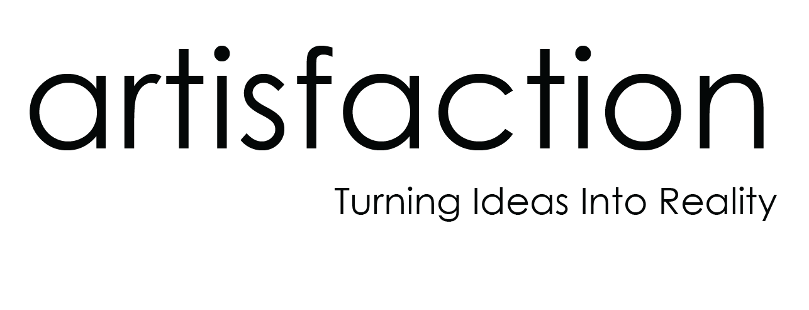
Luxury Scenography · Production Consultancy & Management
Artisfaction works with agencies, maisons, private clients and high jewellery teams who need calm production direction, build coordination and site management without unnecessary noise.
For projects where materiality, detail and execution define the final experience.
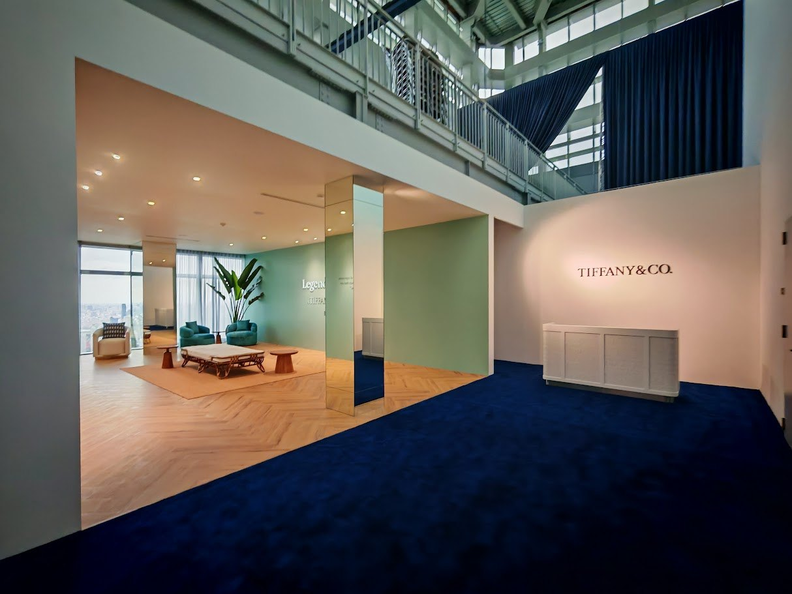
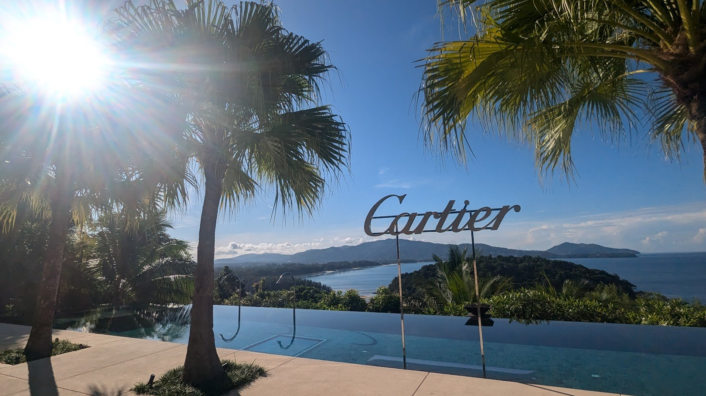
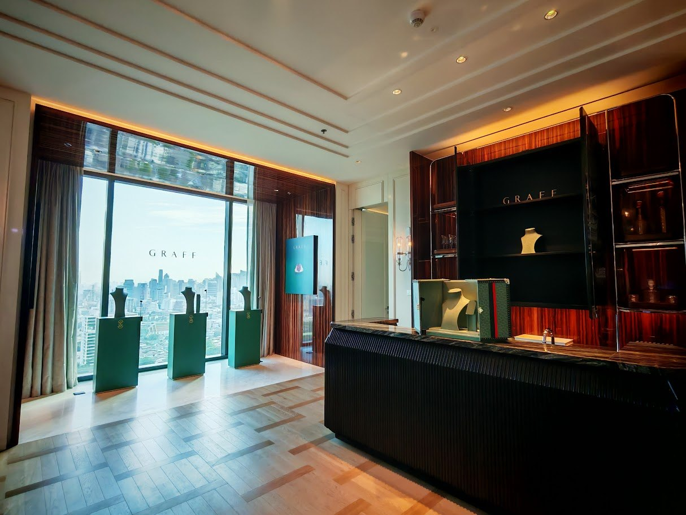
Production consultancy · Management · Site readiness
Luxury scenography is built through quiet decisions: material tone, lighting behaviour, sightline, structure, access, timing and the final guest-facing finish.
Artisfaction works quietly behind the scene to translate creative intent into a physical environment that feels calm, precise and complete.
Led by Stanley See, a Singapore-based production consultant and management specialist with over 19 years of experience, the work focuses on calm production direction, build coordination and detail control for luxury environments.
Services
For agencies, maisons, high jewellery teams and private clients who need calm production direction without unnecessary noise.
Production consultancy for high jewellery presentations, private client experiences and refined brand environments.
Feasibility, layout review, build sequence, technical requirements and site readiness.
Access, loading, power, contractor movement, installation flow and build direction.
Workshop checks, material selection, sample review and production timeline direction.
Display alignment, lighting, surface finish, cleanliness and guest-facing presentation, where materiality shapes the result.
Vendor timing, crew briefing, on-site decisions, handover and teardown direction.
The guest sees the final atmosphere. Behind it is quiet management: structure, lighting, finish, installation sequence, site movement and readiness.
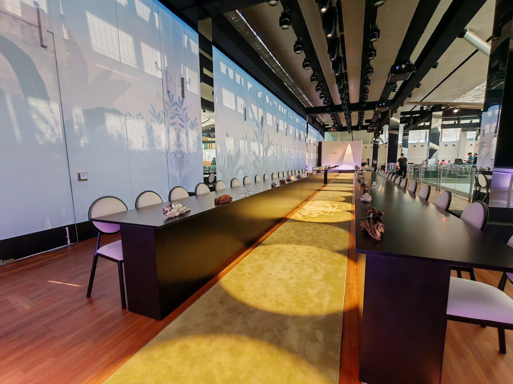
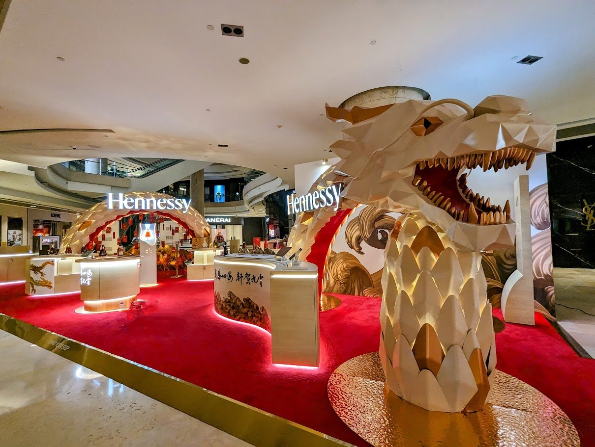
Selected Work
Finished environments and selected details across maison presentations, high jewellery experiences and regional scenography projects.
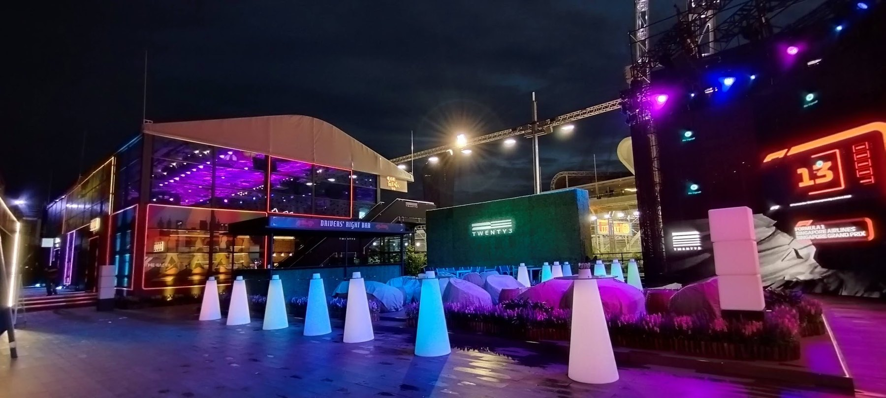
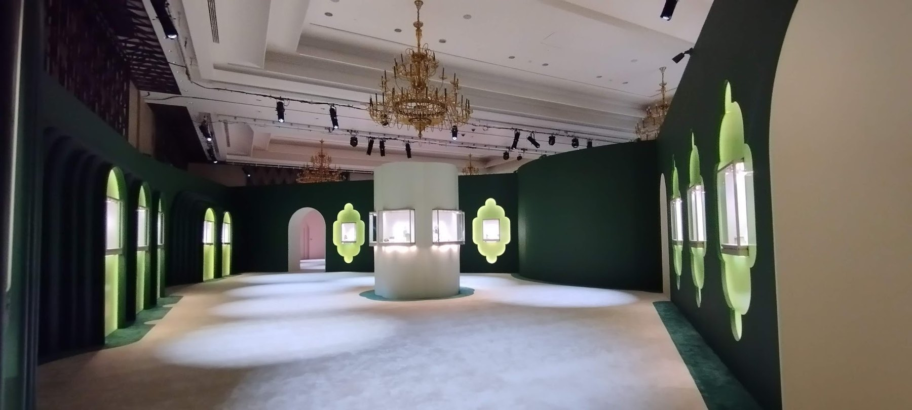
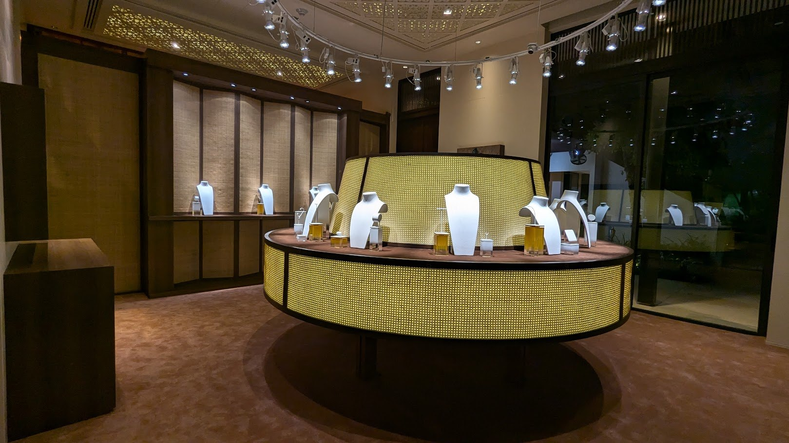
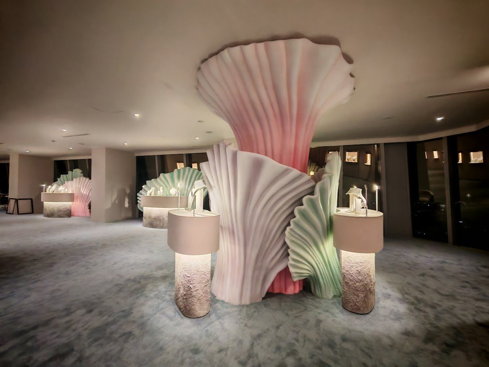
Project Highlights
Process
Simple, structured and site-ready.
Creative intent, venue, timeline and production needs.
Turn the idea into build method, materials, site flow and vendor instructions.
Align fabrication, lighting, venue, manpower, logistics and client expectations.
Manage setup sequence, finishing details, technical checks and guest-readiness.
Final presentation, site closure, teardown and post-event wrap-up.
Good scenography feels effortless because the technical questions have already been solved.
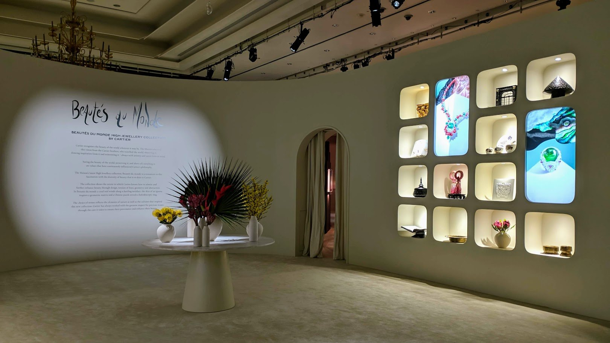
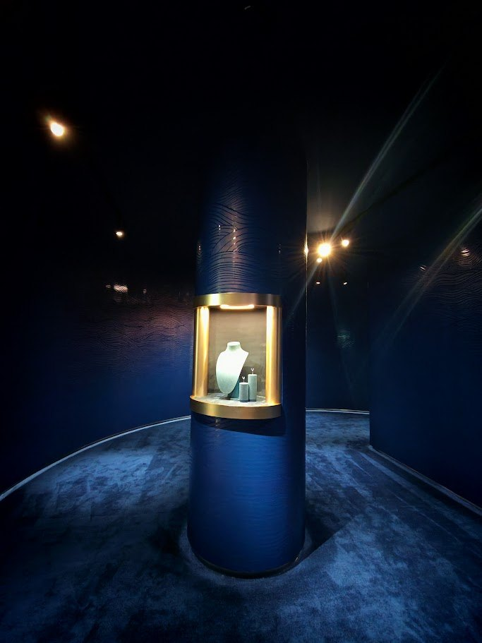
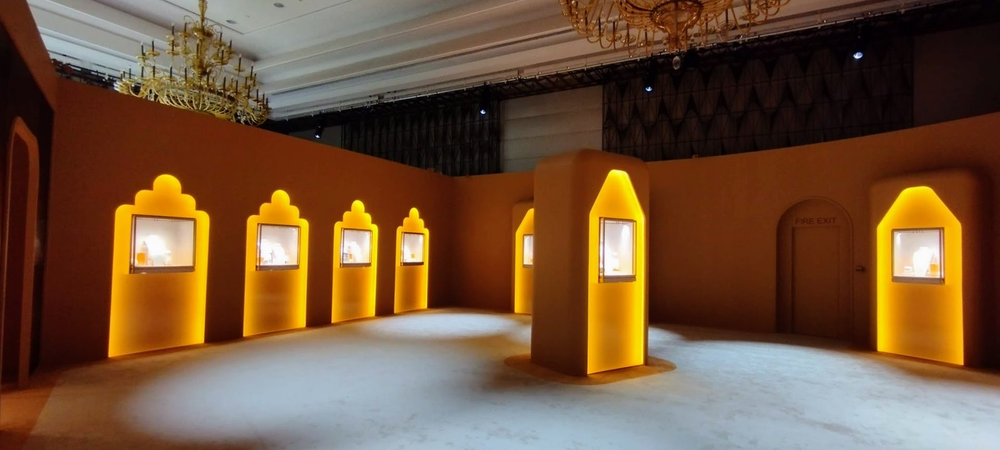
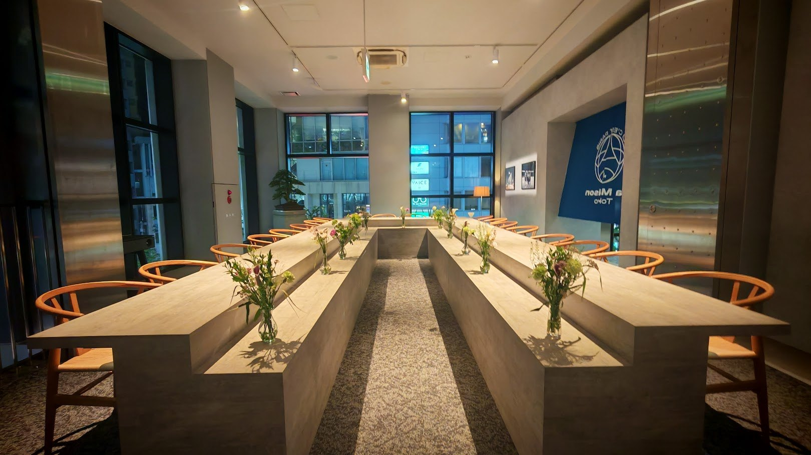
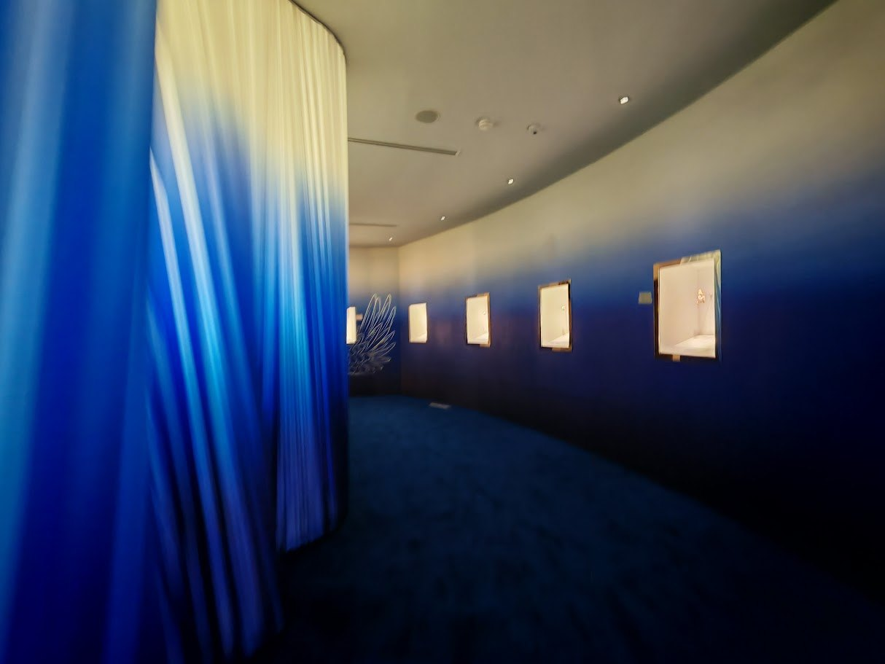
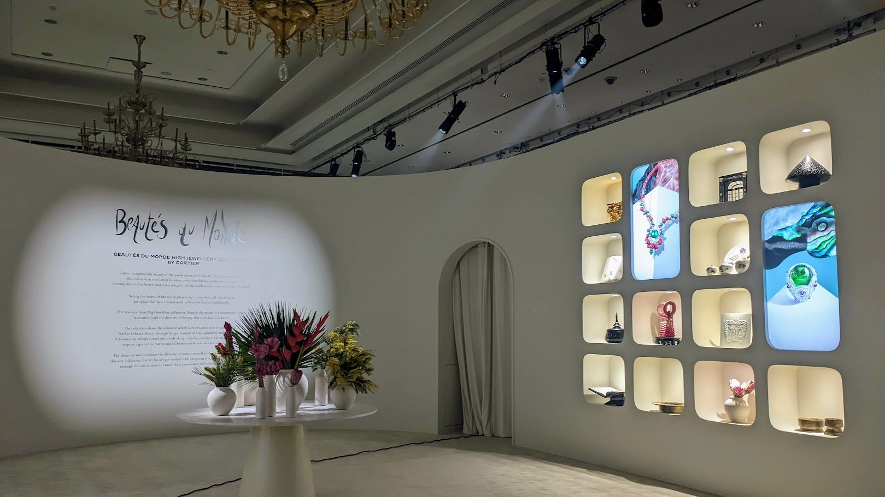
Contact
Speak to Artisfaction for scenography production consultancy, fabrication coordination, site planning and refined on-ground execution across the region.
60 Paya Lebar Road
#06-28 Paya Lebar Square
Singapore 409051
Phone
+65 8447 7668